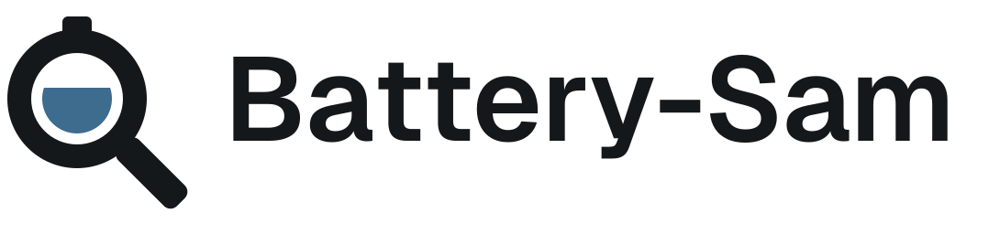
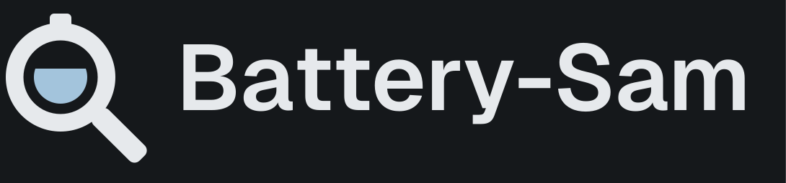
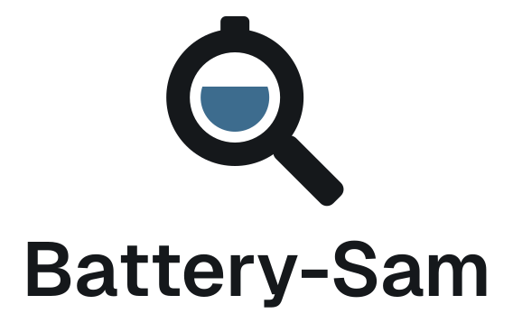
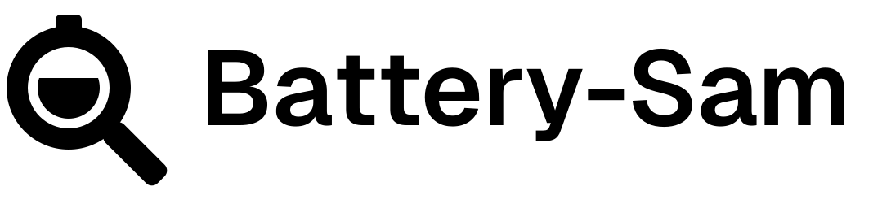

Battery-Sam · guía del logo
Una lupa con el polo de una pila arriba y el lente lleno como nivel de carga: revisar la batería por dentro. Wordmark en Geist SemiBold (SIL Open Font License), convertido a trazados.
Versiones

Horizontal · principal
Horizontal · fondo oscuro
VerticalSímbolo
Icono de app
Una tinta

Negro
Blanco (trazo adelgazado)Color
Grafito
#15181B · RGB 21 24 27
CMYK 22 11 0 89
Anillo, mango y texto sobre claro
#15181B · RGB 21 24 27
CMYK 22 11 0 89
Anillo, mango y texto sobre claro
Azul profundo
#3D6C8E · RGB 61 108 142
CMYK 57 24 0 44
Nivel sobre claro (5.6:1 con blanco)
#3D6C8E · RGB 61 108 142
CMYK 57 24 0 44
Nivel sobre claro (5.6:1 con blanco)
Azul acero
#A3C4DC · RGB 163 196 220
CMYK 26 11 0 14
Nivel y acento sobre grafito (9.8:1)
#A3C4DC · RGB 163 196 220
CMYK 26 11 0 14
Nivel y acento sobre grafito (9.8:1)
Niebla
#E6E9EC · RGB 230 233 236
CMYK 3 1 0 7
Anillo y texto sobre grafito
#E6E9EC · RGB 230 233 236
CMYK 3 1 0 7
Anillo y texto sobre grafito
El azul acero no va sobre blanco (1.8:1): ahí se usa el azul profundo. Los CMYK son aproximados; si se imprime, confirmar con la imprenta.
Área de protección y tamaños mínimos
| Versión | Mínimo |
|---|---|
| Horizontal | 24 px de alto · 8 mm impreso |
| Vertical | 48 px de alto · 15 mm |
| Símbolo | 24 px · 6 mm |
| Menos de 24 px | favicon.svg (versión chica) |
Alrededor del logo queda libre al menos el alto del polo (x) por cada lado.
Usos incorrectos
No deformar
No girar
No sobre azul acero
Sin sombras ni efectos
No cambiar colores